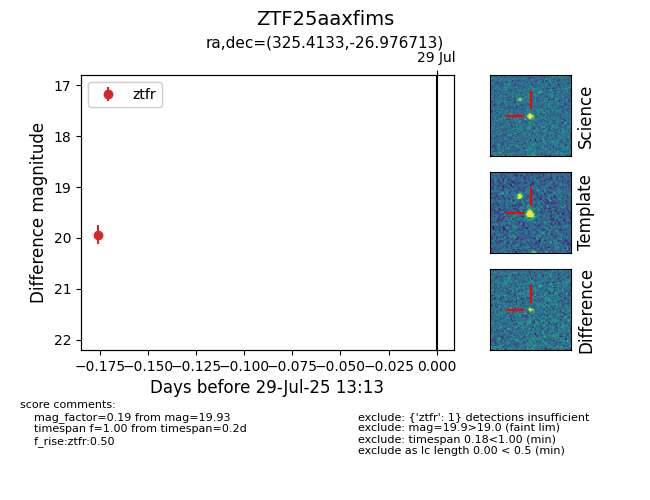

Target ZTF25aaxfims at 2025-07-29 13:13, see:
FINK: fink-portal.org/ZTF25aaxfims
Lasair: lasair-ztf.lsst.ac.uk/objects/ZTF25aaxfims
ALeRCE: alerce.online/object/ZTF25aaxfims
alt names
ZTF25aaxfims (ztf,fink)
coordinates:
equatorial (ra, dec) = (325.4133,-26.97671)
galactic (l, b) = (21.8230,-48.00814)
photometry
last ztfr=19.93
1 ztfr detections
